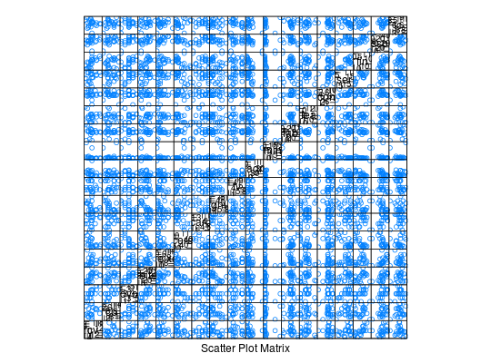

Dados referentes a consumo de proteína e força de trabalho em países europeus.
Um data.frame com 22 países e 18 variáveis.
paiscvcbovoleitepeixecerecarbgnlfvagrminfabfeaconserfinssptcMANLY (2005), pág. 175.
data(ManlyTb10.4)#> Warning: data set ‘ManlyTb10.4’ not foundstr(ManlyTb10.4)#> 'data.frame': 22 obs. of 19 variables: #> $ pais : Factor w/ 22 levels "Albania","Austria",..: 1 2 3 4 5 7 8 9 10 11 ... #> $ cv : int 10 9 14 8 11 10 18 10 5 14 ... #> $ cb : int 1 14 9 6 11 5 10 3 12 10 ... #> $ ovo : int 1 4 4 2 4 3 3 3 3 5 ... #> $ leite: int 9 20 18 8 25 34 20 18 10 26 ... #> $ peixe: int 0 2 5 1 10 6 6 6 0 2 ... #> $ cere : int 42 28 27 57 22 26 28 42 40 24 ... #> $ carb : int 1 4 6 1 5 5 5 2 4 6 ... #> $ gnl : int 6 1 2 4 1 1 2 8 5 2 ... #> $ fv : int 2 4 4 4 2 1 7 7 4 3 ... #> $ agr : num 55.5 7.4 2.6 19 5.6 8.5 5.1 22.2 15.3 13.8 ... #> $ min : num 19.4 0.3 0.2 0 0.1 0.2 0.3 0.5 28.9 0.6 ... #> $ fab : num 0 26.9 20.8 3.5 20.4 26.3 20.2 19.2 0 19.8 ... #> $ fea : num 0 1.2 0.8 0 0.7 1.2 0.9 1 0 1.2 ... #> $ con : num 3.4 8.5 6.3 6.7 6.4 6.8 7.1 6.8 6.4 7.1 ... #> $ ser : num 4.3 19.1 16.9 9.4 14.5 14.6 16.7 18.2 13.3 17.8 ... #> $ fin : num 15.3 6.7 8.7 1.5 9.1 8.6 10.2 5.3 0 8.4 ... #> $ ssp : num 0 23.3 36.9 20.9 36.3 33.2 33.1 19.8 27.3 25.5 ... #> $ tc : num 3 6.4 6.8 7.5 7 7.5 6.4 6.9 8.8 5.8 ...library(lattice) splom(ManlyTb10.4[-1])